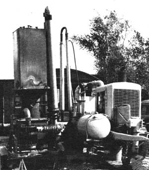

ABOVE: Odin Associates' diesel-powered 35-KW generator runs on gas produced from burning corncobs. A small amount of liquid fuel is required for ignition and lubrication, but this particular unit is 80% cornfed! Simplicity and low initial investment cost were the project objectives.